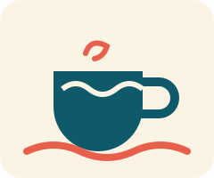

Welcome to the Jovial Albatross Wind Tea Cart

The Jovial Albatross Wind Tea Cart is a small seaside cart that serves four iced teas, each named after a wind that sailors have trusted for centuries: Trade Wind, Doldrums, Sea Breeze, and Gale. Every cup is brewed fresh and poured over ice with a coastal ingredient, like sea salt, citrus, or mint.
An albatross can glide for thousands of miles without flapping its wings, and our teas are made in the same spirit: unhurried and easy. Walk up, pick a wind, and take a moment by the water. Use the menu above to see our teas, our hours, and where to find the cart.